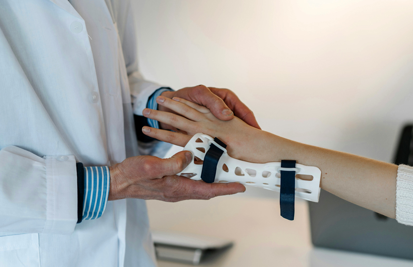

외래진료
삼성서울병원 외래진료 안내

- 외래 진료 접수시간은 환자 수, 진료과 사정에 따라 다소 조정될 수 있으며, 응급환자는 응급실에서 휴일 없이 24시간 365일 접수, 진료가 가능합니다.
- 응급환자의 경우 진료의뢰서 없이도 진료가 가능합니다.
- 저희 병원을 처음 방문하시는 환자분께서는 건강보험증을 지참하시고 내원하시면 진료(보험혜택)를 받으실 수 있습니다.
- 주간병동을 운영하여 입원 대기시간 감소와 수술 및 검사에 대한 빠른 전처치가 가능합니다.
외래 진료절차
-
STEP 1
예약 & 접수
-
STEP 2
진료
-
STEP 3
수납
-
STEP 4
차방
-
STEP 5
예약 후 귀가
외래 진료 접수방법
- 병원에 처음 내원하시는 분은 건강보험증, 주민등록증, 요양급여의뢰서(의료급여 환자에 한함)를 지참하셔야 합니다.
- 예약 없이 내원하시는 경우 대기시간이 다소 길어질 수 있습니다. 이점 양해 부탁 드립니다.
- 진료예약/당일접수 하신 분은 해당 진료과에서 성함을 말씀 하신 후 대기실에 앉아 계시면 진료를 받으실 수 있습니다.